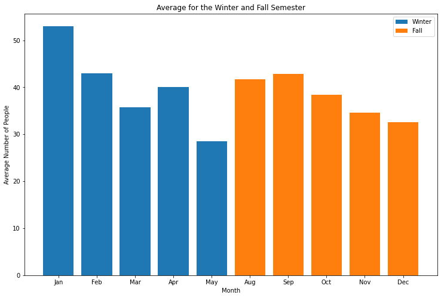
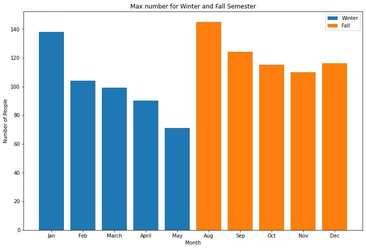
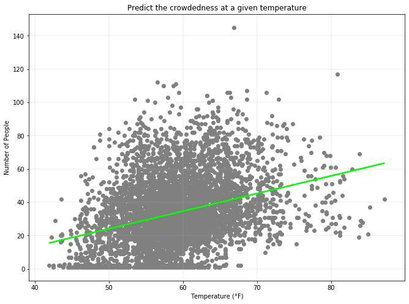
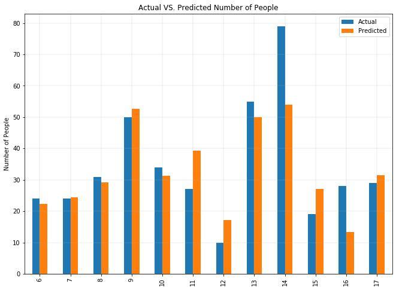

The average number of students peak at the start of both semesters.

The max number of students peak at the start of both semesters.

The linear regression on the independant variable 'temperature' demonstrates that as temperature increases so does the number of people with a coeficient of: 1.05924705

The following graph displays the accuracy of the multiple linear regression algorithm used to predict the number of people at the gym